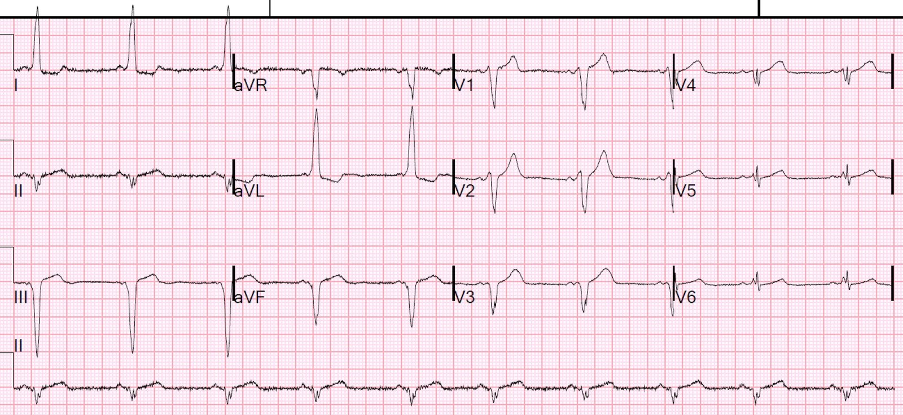
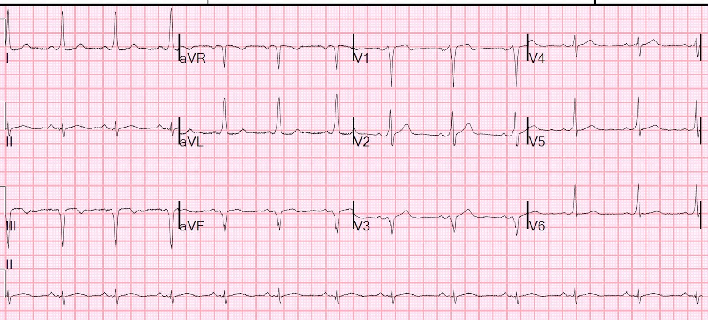
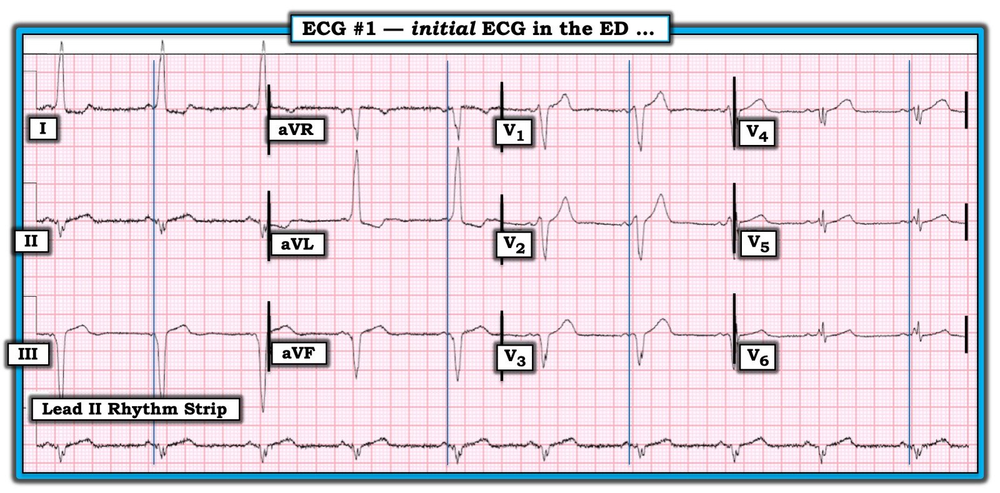

08/06/2019 — Một phụ nữ 40 mấy tuổi không có tiền sử bệnh lý đến khám vì đau ngực 2 ngày
Bản dịch tiếng Việt của bài "A 40-something woman with no medical history presented with 2 days of chest pain" – Dr. Smith’s ECG Blog. Giữ nguyên toàn bộ 5 hình ảnh của bản gốc.
Một bệnh nhân 40 mấy tuổi gọi 911 vì đau ngực 2 ngày. Rất khó khai thác bệnh sử vì rào cản ngôn ngữ, nhưng tất nhiên một điện tâm đồ trước viện đã được ghi lại. Bản ghi đó không có ở đây nhưng trông giống hệt điện tâm đồ đầu tiên tại khoa cấp cứu (ED).


Nhân viên cấp cứu ngoài viện nhận thấy ST chênh lên (STE) ở thành dưới kèm ST chênh xuống (STD) soi gương và lo ngại nhồi máu cơ tim thành dưới. Đồng nghiệp của tôi xem bản ghi này và nghĩ: “Không, tôi nghĩ đây là LVH, không phải nhồi máu cơ tim.”
Họ làm vài xét nghiệm troponin âm tính và ghi thêm một điện tâm đồ khác (giống hệt).
Tôi đến nhận ca thay đồng nghiệp và anh ấy nhờ tôi xem điện tâm đồ.
Tôi nhìn qua và nói: “WPW”
Khoảng PR ngắn, và toàn bộ phần QRS bất thường là do hoạt hóa qua đường phụ (accessory pathway). Phần đầu QRS ở mọi chuyển đạo đều bị trát đậm (slurred). Hình ảnh hơi giống blốc nhánh trái vì đường phụ nằm ở bên phải, dẫn đến hoạt hóa từ phải sang trái, y như LBBB.
Khử cực bất thường dẫn đến tái cực bất thường và bắt chước nhồi máu cơ tim cấp, đồng thời, với các sóng QR và QS biểu kiến, bắt chước cả nhồi máu cơ tim cũ.
Tôi quay lại nói chuyện với bệnh nhân qua phiên dịch viên và khai thác được vài đợt ngất trong những tháng gần đây.
Tôi mời bác sĩ điện sinh lý của chúng tôi hội chẩn.
Anh ấy xuống khám và đủ lo ngại để xếp lịch triệt đốt cho bệnh nhân trong vòng 4 ngày.
Tại thăm dò điện sinh lý (EP study):
1. SVT được gây ra dễ dàng khi truyền isuprel
2. Các nghiệm pháp tạo nhịp gợi ý SVT là AVRT
3. Đường phụ được lập bản đồ theo chiều xuôi dòng bằng hệ thống CARTO
4. Đã tiến hành triệt đốt bằng sóng có tần số radio (RF) và dẫn truyền qua đường phụ chấm dứt khi triệt đốt.
5. Không thể gây lại SVT sau triệt đốt. Không còn tiền kích thích sau triệt đốt.
Đây là điện tâm đồ sau triệt đốt:


Dường như vẫn còn sóng delta (nhỏ hơn).
Nhưng không còn gây được SVT nữa.
Điểm cần học:
Bất cứ khi nào có bất thường ST-T (bất thường tái cực), TRƯỚC TIÊN hãy nhìn vào QRS (các khoảng, điện thế, trục, v.v.) để xem chúng có phải là hậu quả của bất thường khử cực hay không. Các bất thường khử cực thường gặp gây dương tính giả thiếu máu cục bộ (ST-T) là:
LVH (phì đại thất trái)
LBBB (blốc nhánh trái)
RBBB (blốc nhánh phải)
IVCD (chậm dẫn truyền trong thất)
WPW (hội chứng Wolff-Parkinson-White)
Sóng QS
Bất kỳ bất thường nào trong số này cũng có thể gây cả ST chênh lên lẫn ST chênh xuống soi gương.
Khi tôi đưa ca này cho một số bác sĩ nội trú và đồng nghiệp xem, không ai nhận ra. Gần đây tôi đang nghiên cứu tất cả bệnh nhân WPW tại cơ sở của chúng tôi và nhận thấy điện tâm đồ của họ liên tục bị bỏ sót bởi cả máy tính lẫn bác sĩ.
Dưới đây là một số ca tương tự:
WPW mimicking and obscuring acute MI (WPW giả dạng và che lấp nhồi máu cơ tim cấp)

===================================
Bình luận của KEN GRAUER, MD (8/6/2019):
===================================
Ca bệnh tuyệt vời cho mục đích giảng dạy — với điểm giảng dạy MẤU CHỐT là: “Làm sao để tôi tránh được sai lầm đáng xấu hổ là không nhận ra WPW?” Theo kinh nghiệm của tôi qua nhiều thập kỷ giảng dạy đọc điện tâm đồ — câu trả lời rất đơn giản = Hãy dùng một Cách tiếp cận Hệ thống mỗi và mọi lần bạn đọc bất kỳ điện tâm đồ nào!
- Dùng một hệ thống không làm bạn chậm lại. Chỉ cần luyện tập một chút — nó giúp bạn nhanh hơn với lợi thế lớn là bạn sẽ ít có khả năng bỏ sót những dấu hiệu lẽ ra phải được phát hiện hơn nhiều …
- Trước đây tôi đã giới thiệu Hệ thống mà tôi ưa dùng (BẤM VÀO ĐÂY). Có nhiều hệ thống — và bất kỳ hệ thống nào BẠN ưa thích cũng đều được, miễn là bạn luôn luôn dùng cách tiếp cận hệ thống của mình trước khi vội đi đến kết luận về những gì điện tâm đồ thể hiện.
Với hy vọng minh họa cách không bỏ sót chẩn đoán WPW trong ca này — tôi đã thêm một số vạch thời gian (time-lines) vào điện tâm đồ (Hình 1).
- LƯU Ý: WPW dễ nhận ra nhất khi có tiền kích thích hoàn toàn — và, khi thấy sóng delta ở hầu hết các chuyển đạo. Nhưng — xung động có thể không phải lúc nào cũng dẫn truyền đồng đều xuống AP (đường phụ — Accessory Pathway). Thay vào đó, xung động có thể được dẫn truyền một phần hoặc toàn bộ xuống đường dẫn truyền bình thường qua nút AV. Điều này giải thích vì sao dù có WPW, phức bộ QRS sẽ không phải lúc nào cũng giãn rộng — và vì sao bạn có thể không phải lúc nào cũng thấy sóng delta ở tất cả các chuyển đạo. Một lý do khác khiến sóng delta không phải lúc nào cũng rõ trên điện tâm đồ là sóng delta có thể đẳng điện so với đường nền điện tâm đồ.


========================
CÁCH TIẾP CẬN CỦA TÔI với Bản ghi này: Dù bạn dùng hệ thống nào — tốt nhất nên bắt đầu đọc bất kỳ bản ghi 12 chuyển đạo nào bằng việc đánh giá Tần số và Nhịp. Tôi luôn luôn tìm xem có dải chuyển đạo II dài hay không — vì tôi thực sự mất không quá 2-3 giây để lướt qua một dải chuyển đạo II dài nhằm xác định có nhịp xoang bình thường với sóng P dương + khoảng PR cố định đi trước mỗi phức bộ QRS hay không.
- Các vấn đề trong bản ghi này là: i) Có RẤT NHIỀU nhiễu ở chuyển đạo II (và cả ở chuyển đạo I và aVR — nhiều khả năng nhất là do cử động/run ở chi tay phải); và, ii) Nhịp trông giống cơ chế xoang bình thường ở chuyển đạo II, vì khoảng PR không thực sự có vẻ bất thường !!! (Về mặt kỹ thuật — sự không đều nhẹ của khoảng R-R ở đây đủ để xếp là loạn nhịp xoang).
- ĐIỀU CẦN NHỚ — Phần lớn trường hợp bạn sẽ nhận ra được WPW trên điện tâm đồ vì khoảng PR ở chuyển đạo II (là chuyển đạo tốt nhất để xác định nhịp) sẽ bị ngắn lại. NHƯNG — điều này hoàn toàn không rõ ràng trong ca này, và tôi thừa nhận rằng tôi đã không nhận ra WPW khi xem xét ban đầu chuyển đạo II trong Hình 1.
Sau khi đánh giá Tần số & Nhịp — tôi ưa xem tiếp các khoảng. Lý do tôi đánh giá Khoảng (tức là PR/QRS & QTc) sớm trong quá trình đọc — là NẾU phức bộ QRS bị giãn rộng, bạn cần tìm ra TẠI SAO trước khi đi tiếp.
- Khi nhịp là nhịp xoang — 3 nguyên nhân thường gặp gây giãn rộng QRS là LBBB — RBBB — hoặc IVCD (chậm dẫn truyền trong thất). Điện tâm đồ trong Hình 1 chắc chắn không phải RBBB. Dù thoạt nhìn bản ghi này trông giống LBBB ở các chuyển đạo chi — nó thiếu phức bộ QRS một pha (dương hoàn toàn) ở chuyển đạo V6 — và — sóng R khởi đầu ở các chuyển đạo trước V1 và V2 trông rõ ràng rộng hơn nhiều so với thường thấy trong LBBB (BẤM VÀO ĐÂY — để xem “Quan điểm của tôi” về chẩn đoán trên điện tâm đồ blốc nhánh (Bundle Branch Block)).
- ĐIỀU CẦN NHỚ — Chính ở thời điểm này trong ca bệnh, tôi nhận thấy khoảng PR ở chuyển đạo I và aVL rõ ràng bị ngắn lại. Nhìn kỹ hơn vào chuyển đạo V1 và V2 lúc này thì mọi thứ trở nên hợp lý — ở chỗ những sóng R khởi đầu rộng-hơn-mức-đáng-có đó thực ra là sóng delta ở các chuyển đạo trước này.
- Để cho rõ — tôi đã vẽ các vạch thời gian trong Hình 1, bắt đầu từ điểm khởi đầu của sóng delta ở mỗi chuyển đạo trong 12 chuyển đạo. Từ các vạch thời gian này — sẽ dễ thấy hơn nhiều sóng delta dài, âm ở chuyển đạo III — cũng như lý do vì sao đoạn PR đẳng điện ở chuyển đạo II ban đầu không được tôi nhận ra là sóng delta. Giờ đây đã rõ rằng sóng delta có hiện diện ở các chuyển đạo V1,V2,V3 — nhưng phần đầu của QRS ở V4,V5,V6 hoàn toàn không giống với hình dạng sóng delta mà chúng ta thường mong đợi.
- ĐIỀU CỐT LÕI: Phần lớn những lần chẩn đoán WPW không hiện ra ngay với tôi — tôi đã phát hiện WPW nhờ tìm được vài chuyển đạo (như chuyển đạo I và aVL trong bản ghi này) mà ở đó tôi biết chắc có PR ngắn + sóng delta. Tôi nhận thấy rằng việc xác định được một vài chuyển đạo chắc chắn có PR ngắn + sóng delta giúp ích rất nhiều cho khả năng nhận ra sóng delta ở các chuyển đạo khác bằng cách hình dung trong đầu những vạch thời gian đồng thời mà tôi đã vẽ trong Hình 1.
ĐỀ XUẤT: Hãy xem BẢN GHI NÀY — trong đó ví dụ WPW kín đáo này được phát hiện nhờ nhận ra một dấu hiệu điện tâm đồ bất thường là Sóng R cao ở Chuyển đạo V1.
- Ở cuối trang của đường link trên — tôi điểm lại Cách tư vấn cho bệnh nhân không triệu chứng mắc WPW!
Cách Xác định vị trí AP trên Điện tâm đồ: Dù nhiệm vụ của chúng ta, những bác sĩ lâm sàng không phải là bác sĩ tim mạch điện sinh lý, đơn giản chỉ là nhận ra WPW, chứ không phải “xác định vị trí” AP — việc có thể dự đoán vị trí có khả năng của AP vẫn là điều thú vị. Sau khi điểm lại nhiều thuật toán trong y văn — tôi đã điều chỉnh một vài thuật toán để đưa ra một cách dễ sử dụng và nhanh nhằm dự đoán vị trí có khả năng của AP dựa trên biểu hiện của nó trên điện tâm đồ.
- BẤM VÀO ĐÂY — để xem phương pháp của tôi. Hãy đọc tiếp để thấy tôi áp dụng phương pháp này như thế nào để dự đoán vị trí AP cho điện tâm đồ trong Hình 1.
- BƯỚC đầu tiên trong cách tiếp cận của tôi dựa trên vị trí xảy ra Vùng chuyển tiếp ở các chuyển đạo ngực (tức là nơi sóng R trở nên cao hơn độ sâu của sóng S). Vì phức bộ QRS ở chuyển đạo V1 không chủ yếu dương — chúng ta có thể bỏ qua BƯỚC A-1 trong thuật toán của tôi. Thực tế, vì vùng chuyển tiếp trong điện tâm đồ này mãi đến giữa V4 và V5 mới xảy ra (cuối cùng mới thấy sóng R chiếm ưu thế ở V5) — chúng ta bắt đầu với BƯỚC B-5.
- BƯỚC B-5 cho biết chúng ta có một AP bên phải nhiều khả năng nằm ở thành tự do thất phải (RV). Để đo trục mặt phẳng trán của sóng delta — chúng ta có thể xem các vạch thời gian trong Hình 1. Sóng delta ở chuyển đạo I (tức là ~40 msec đầu tiên của QRS) dương (hướng lên). Sóng delta ở chuyển đạo aVF âm. Điều này cho ra trục mặt phẳng trán của sóng delta âm.
- Theo BƯỚC B-5 — tiếp theo chúng ta xem sóng R ở chuyển đạo III. Phức bộ QRS ở chuyển đạo III âm hoàn toàn (tức là không có sóng R) — theo thuật toán của tôi, điều này gợi ý có một AP ở thành tự do thất phải (RV), vùng sau-bên (Postero-Lateral).
ĐIỀU CẦN NHỚ CUỐI CÙNG — Tôi dám chắc bạn sẽ bỏ sót WPW ít hơn nhiều (nếu có bao giờ bỏ sót nữa) NẾU bạn thường xuyên dùng một cách tiếp cận hệ thống để đọc điện tâm đồ. Ca bệnh NÀY khiến chúng ta phải khiêm tốn vì có biết bao người hành nghề giỏi đã bỏ qua chẩn đoán. Lẽ ra WPW không nên bị bỏ sót trong ca này …